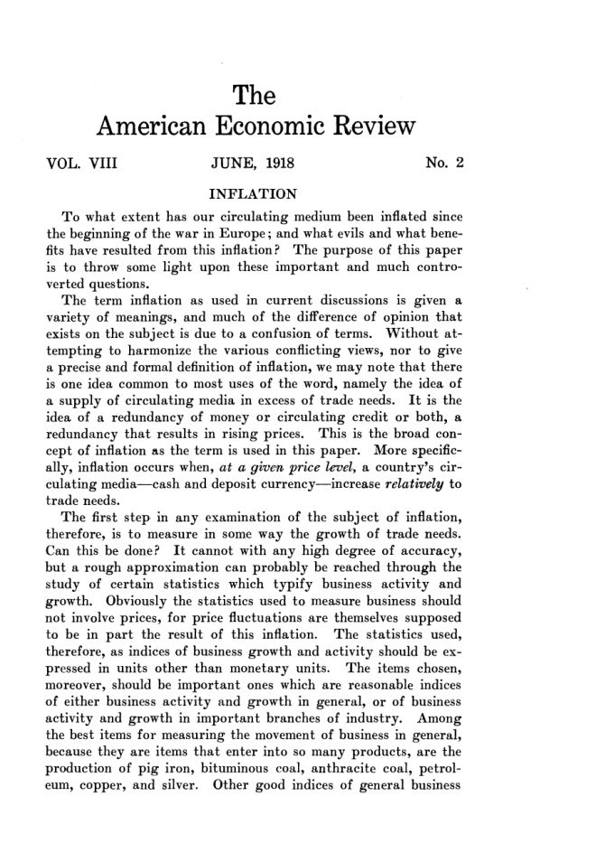

Kemmerer, 1918: quanto a guerra inflou o dólar
Leitura: 9 min
E. W. Kemmerer compara o crescimento físico dos negócios com o da moeda, das reservas e dos depósitos entre 1913 e 1917 e conclui que a inflação americana veio do ouro represado e de um sistema bancário mais eficiente.


Em 7 de setembro de 1917, uma proclamação do presidente Wilson proibiu a exportação de moedas, barras e papel-moeda dos Estados Unidos sem licença do Federal Reserve Board. Desde então, registra E. W. Kemmerer, as exportações de ouro foram mínimas. Exigir ouro dos bancos ou usá-lo na circulação passou a ser visto como gesto antipatriótico. Para Kemmerer, o embargo é a peça que faltava para explicar a alta de preços: o país tinha mais ouro do que precisava, e o ouro não podia sair.
O artigo, da Princeton University, abre o número de junho de 1918 da American Economic Review com duas perguntas: quanto o meio circulante americano foi inflado desde o início da guerra na Europa, e que males e benefícios resultaram disso. A resposta é construída quase toda com tabelas, cada uma com base na média de 1910–1914, para que os números sejam comparáveis.
Como medir a inflação sem usar preços?
O termo inflação, observa Kemmerer, tinha muitos sentidos, e boa parte da controvérsia vinha da confusão entre eles. Sem pretender uma definição formal, ele fica com a ideia comum à maioria dos usos: uma oferta de meios circulantes, moeda e depósitos à vista, superior às necessidades do comércio, que resulta em preços em alta. Mais precisamente, há inflação quando, a um dado nível de preços, os meios circulantes crescem mais que essas necessidades.
O problema é medir as necessidades do comércio. Kemmerer admite que isso não pode ser feito com precisão, mas acha possível uma aproximação. As séries devem ser expressas em unidades físicas, não em dinheiro, porque os preços são em parte efeito da inflação que se quer medir. Ele escolhe doze: produção de ferro-gusa, carvão betuminoso, antracito, petróleo, cobre e prata; fretes de seis ferrovias; tonelagem de navios nos portos; safras de trigo, milho e algodão; e licenças de construção em 49 cidades. Cada uma tem seu viés, e por isso convém ouvir todas.
Kemmerer prefere o primeiro índice. O mercado de ações faz grande demanda de depósitos, mas sua variação é tão ampla que distorce o resto; ele publica o segundo índice para quem preferir usá-lo.
O que cresceu mais que os negócios?
Quase tudo do lado monetário. A moeda em circulação, excluída a que o Tesouro mantinha como ativo e a parte das reservas do Federal Reserve que lastreava suas notas, cresceu 45% entre 1913 e 1917. O ouro usado como moeda, incluídas as barras das reservas monetárias, cresceu cerca de 76%: a proporção de ouro na circulação aumentava rapidamente. A moeda fora dos bancos, em circulação de mão em mão, cresceu 40%.
Mais importante, para Kemmerer, é a moeda que serve de base aos depósitos, porque a maior parte dos negócios do país, entre 75% e 90% segundo as estimativas que cita, é feita com cheques. As reservas de caixa contra depósitos dos bancos nacionais, estaduais, companhias fiduciárias e bancos do Federal Reserve passaram de US$ 1,488 bilhão em 1913 para US$ 2,254 bilhões em 1917, alta de 51%. Os depósitos cresceram 68%.
A velocidade dos depósitos parece ter aumentado também, sob a pressão da guerra, mas aqui Kemmerer é cauteloso: as compensações bancárias deixaram de ser bom indicador porque o novo sistema de compensação do Federal Reserve desviou muitos cheques das câmaras. Ainda assim, as compensações totais cresceram 81% de 1913 a 1917, mais que os depósitos.
Por que um sistema bancário melhor causa inflação?
A explicação está na reforma bancária. Em 1913, os bancos nacionais das cidades centrais de reserva tinham de manter reserva em caixa de 25% dos depósitos. Depois da lei do Federal Reserve e da emenda de 21 de junho de 1917, deviam manter no banco de reserva do distrito 13% dos depósitos à vista e 3% dos depósitos a prazo, e o banco de reserva, 35% em moeda legal contra esses depósitos. Trinta e cinco por cento de 13% dão uma reserva legal de 4,55%. Nas cidades de reserva, a exigência caiu de 15,62% para 3,50%; nos bancos do interior, de 7,40% para 2,45%.
A redução era possível porque o papel comercial ficara mais líquido, com o redesconto nos bancos de reserva e um mercado aberto para esse papel. O fundo de liquidação em ouro permitia transferências entre distritos por lançamentos contábeis, e os doze bancos de reserva, com suas filiais, punham fontes de moeda mais perto de cada região. Tudo isso, reconhece Kemmerer, melhorou muito o sistema.
“Tornou o dinheiro mais barato em relação às mercadorias. Em outras palavras, causou inflação.” (“has therefore made money cheaper as compared with goods. In other words, it has caused inflation.”)
O raciocínio é geral. Se um país precisa de cinco bilhões de dólares para sua circulação e reservas, e uma reforma permite que quatro bilhões façam o mesmo trabalho, um bilhão se torna redundante. Em tempos normais, o excesso aparece em juros baixos, preços especulativos altos e câmbio desfavorável, e logo sai do país como ouro exportado, em troca de mercadorias e títulos; a inflação é temporária, e o país ganhou um mecanismo de trocas mais barato. Com o embargo, o excesso fica represado, como um lago cuja saída foi fechada enquanto a entrada aumenta.
A entrada aumentara muito. No começo da guerra, os Estados Unidos exportavam suprimentos aos beligerantes e tinham grandes saldos a receber. A circulação de ouro passou de cerca de 1,6 bilhão de dólares em 1913 para 2,9 bilhões em 1917.
Que preços subiram?
Todos os índices de preços contam a mesma história, e Kemmerer usa o mais abrangente, o do Bureau of Labor Statistics, com 292 mercadorias. De 1913 a 1917, os preços no atacado subiram 75%. Nos grupos do Bureau, os produtos agrícolas subiram 88%, os metais 108% e os materiais de construção 24%. Os preços de varejo dos alimentos subiram 46%. Imóveis e títulos, ao contrário, caíram, o que Kemmerer explica pela alta dos juros de longo prazo, que reduz o valor presente de rendas futuras.
Os salários ficaram para trás, como costuma acontecer quando os preços sobem depressa. O índice de salários sindicais por hora, cedido antes da publicação oficial por Royal Meeker, comissário de estatísticas do trabalho, subiu 14% desde 1913. Só em ocupações especiais, como munições e construção de acampamentos militares, os salários subiram mais que os preços.
Quem paga a inflação?
Kemmerer enumera os males. A inflação põe uma parte indevida do custo da guerra sobre quem menos pode suportá-lo, contra o princípio de tributar segundo a capacidade de pagar: atinge assalariados, pequenos funcionários, viúvas, órfãos e instituições educativas e de caridade de renda fixa. Dá ao governo, pelos títulos, um dinheiro de poder de compra baixo, que será devolvido mais tarde em dinheiro mais caro; se os contribuintes da geração seguinte não forem os mesmos portadores dos títulos, haverá injustiça grave.
O terceiro mal é o otimismo perigoso. Com inflação suficiente, qualquer empréstimo se coloca; mas o dinheiro é só meio, e o fim são munições, suprimentos e trabalho. É aqui que entra o exemplo dos US$ 20 bilhões que, com preços 25% mais altos, compram o equivalente a US$ 16 bilhões. A ilusão afasta as economias de consumo e o esforço de produção de que a guerra precisa.
Há também benefícios. Preços em alta estimulam a indústria, mas indiscriminadamente, as não essenciais junto com as essenciais, e pela via do lucro, possível porque os salários atrasam. E a carestia força economias no consumo de luxo, liberando trabalho e capital para a guerra. Kemmerer acha que esses benefícios podem ser obtidos por meios menos injustos: restrição de transporte e de crédito às indústrias não essenciais, racionamento e mais impostos em vez de títulos.
A conclusão é condicional. A inflação como política deliberada só deve ser tolerada como último recurso; mas, se for meio necessário para levar trabalho e capital ao esforço de guerra, deve ser tolerada, porque a nação, escreve, é mais que o indivíduo.
Na minha leitura
Na minha leitura, o mérito do artigo está na construção do denominador. Kemmerer não compara moeda com preços, o que seria circular, mas com um índice físico de atividade, e depois decompõe o crescimento monetário em quantidade de ouro, proporção mantida em reserva, depósitos por dólar de reserva e velocidade. É a equação de trocas de Irving Fisher, que ele cita, aplicada peça por peça a um episódio concreto.
A segunda contribuição é tratar a eficiência do sistema bancário como oferta de moeda. A redução das reservas exigidas, num país sem saída para o ouro, tem o mesmo efeito que a descoberta de uma mina. Essa leitura liga reforma institucional, regime cambial e preços num só raciocínio, e explica por que a mesma reforma que seria neutra com o ouro livre se torna inflacionária com o embargo.
Glossário
- Inflação
- na definição de Kemmerer, aumento dos meios circulantes acima das necessidades do comércio, a um dado nível de preços.
- Meios circulantes
- moeda em poder do público e depósitos à vista movimentados por cheque.
- Reserva de caixa
- moeda que os bancos mantêm contra seus depósitos.
- Compensações bancárias
- valor dos cheques liquidados entre bancos nas câmaras de compensação.
- Embargo do ouro
- proibição de exportar ouro sem licença, adotada em setembro de 1917.
- Fundo de liquidação em ouro
- conta do Federal Reserve que permitia acertar saldos entre distritos sem transportar moeda.
- Redesconto
- empréstimo do banco central a um banco, garantido por títulos que este já descontou.
Fontes
- Inflation — E. W. Kemmerer (Princeton University) (pp. 247–269). JSTOR · Internet Archive (PDF)
- Edição completa, com os demais artigos: Nº 152 do Arquivo.
Documento em domínio público (EUA, publicado antes de 1931), via JSTOR Early Journal Content e Internet Archive. Resumo e comentário do autor deste site, sem afiliação com a American Economic Association. Encontrou um erro? Escreva: a correção é publicada no próprio texto, com data.
↑ Nº 152 · A inflação de guerra, o ouro do Federal Reserve e o preço de revenda Douglas, 1918: o custo de contratar e perder trabalhadores →